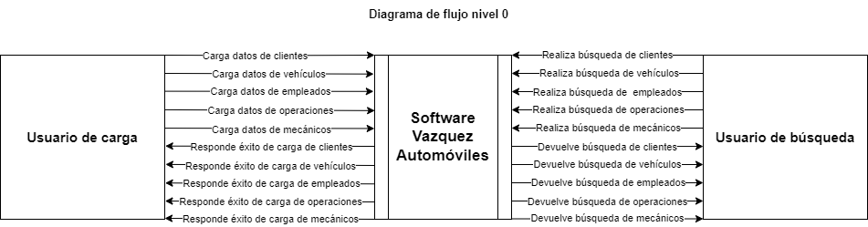

Diseño del sistema recomendado - Base de Datos
Casos de uso
Diseño del sistema recomendado
DIAGRAMAS DE FLUJO DE DATOS
En esta página mostramos los dos primeros niveles de los diagramas de flujo de datos que se realizaron a partir de los requerimientos del cliente y del software.
Diagrama de flujo de datos Nivel 0 o de Contexto

Diagrama de flujo de datos Nivel 1
Volver a la página de inicio